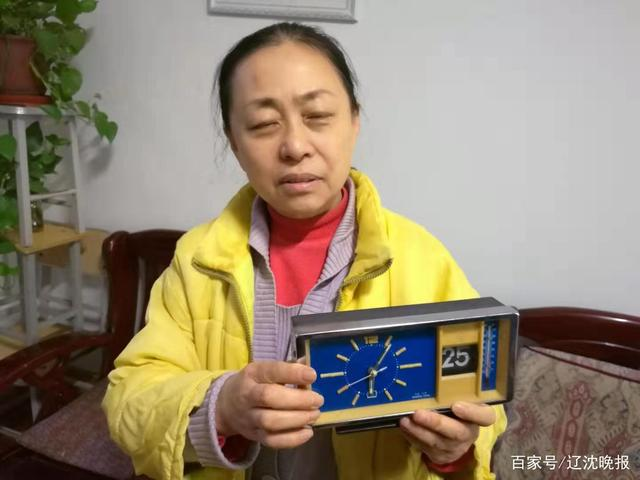

家住沈阳市沈河区东大营街17-2号楼的藉先生给本报打来电话称，家里室温一直不达标才15℃左右，跟供暖公司和换热站勾通过也没啥用，你们能不能过来帮看看。
昨日上午10时，记者来到藉先生所住的辽宁省行政学院家属楼17-2号2-4-2家里，南、北卧室的温度计显示14℃，客厅里的温度计显示13.5℃。
南卧室地上除了有一台“小太阳”，还摆放着一台“暖风机取暖器”，外包装上写着收货时间2019年11月8日。
藉先生介绍，晚上睡觉时必须盖两床棉被而且还要开着小太阳，现在不太管用了，我又买了一个“暖风机取暖器”。由于藉先生是退休教师，73岁的他每天还坚持着写文章、看看报纸。“现在只能写一小会字，前些天室外零下十几度时，屋里冻手啊！”藉老师说。
本单元1楼的退休老师许女士家里室温也不达标。“原来辽宁省行政学院家属楼是学校自己供暖，那时候供热好温度高，每天需要开窗、开门放放热气，但从沈阳广阔供暖有限公司接手后就越来越不好了。我家里养了些小鱼，室内温度太低，我就把鱼缸一直放在暖气片上，就算放暖气片上有时小鱼也有被冻死的，我得不时地用热水瓶放鱼缸里面加加温。”许女士说。
许女士表示，辽宁省行政学院学生住宿楼及办公楼都是由沈阳广阔供暖有限公司供暖。
辽宁省行政学院小区大多是退休老师在此居住，就在记者要离开辽宁省行政学院小区时，在小区里又碰到了几位老人，老人们均表示这里的室内温度普遍不达标。“我到别人家做客，一进门都是热气扑脸，可是回到自己家，眼镜片都不上哈气。”张阿姨说。
采访当天中午11时40分，手机某软件显示室外温度零上4℃，室外零上4℃，室内温度都未达标，如果室外零下二十几度，室内温度又会什么样呢？
中午12时20分，记者联系到了沈阳广阔供暖有限公司客服并告知辽宁省行政学院小区住户室温不达标的情况，客服人员联系到了换热站的负责人李先生。
换热站负责人李先生告诉本报记者，他们会马上去行政学院小区了解情况。“住户与住户之间的情况也不太一样，有的是家里的暖气片堵了造成的不热，有的是室内密封不好造成的。”李先生说。
换热站负责人李先生表示，有300多米供暖地下管网经过辽宁省行政学院食堂地下，由于辽宁省行政学院食堂地下的水管有漏点造成大量积水，这段供暖地下管网被冰凉的积水长时间浸泡也是导致热源流失的原因，我们跟辽宁省行政学院领导交涉过多回也没能解决这个问题，如果这个问题解决了，辽宁省行政学院小区家属楼的温度还能提高几度。
供暖帮办“十年”再出发
有问题拨打96006
将近1000个满意的笑脸，1000余篇监督报道，上万个热线电话，勾勒出“供暖帮办三人行”栏目的10长轨迹。
2019年已经是辽沈晚报“供暖帮办三人行”栏目开办的第十一个年头，从今日起，辽沈晚报“供暖帮办三人行”再次启程。
供暖温度不达标、锅炉房间歇供暖、拨打报修电话迟迟没人来维修、维修多次温度没有提升、客服接待人员态度恶劣、报修电话长时间无人接听、供暖公司维修工人私下收取不应该收的费用、暖气上水管线爆裂到底该谁赔、供暖单位提前停供……如果在今年的供暖期里您家遇到了这些问题，请拨打供暖投诉热线96006，我们将耐心处理您的相关投诉。
维权热线：024-96006
辽沈晚报记者 王罡
聊沈客户端编辑 韩宇